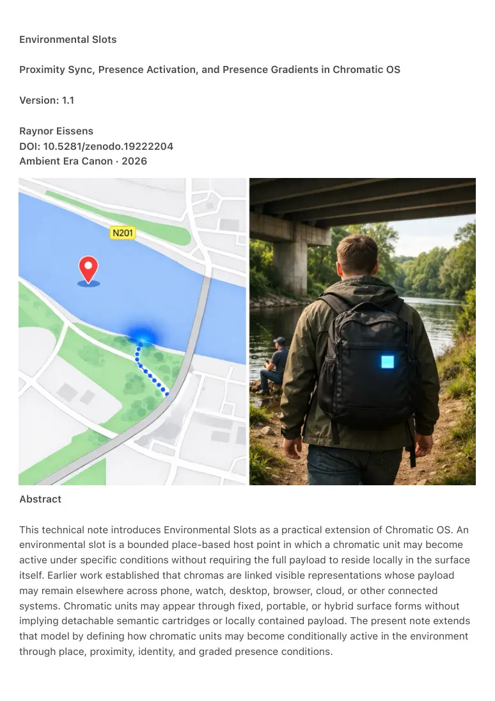
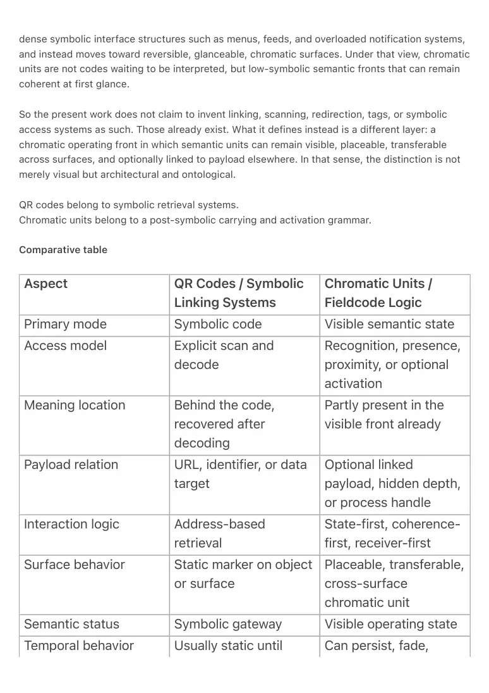
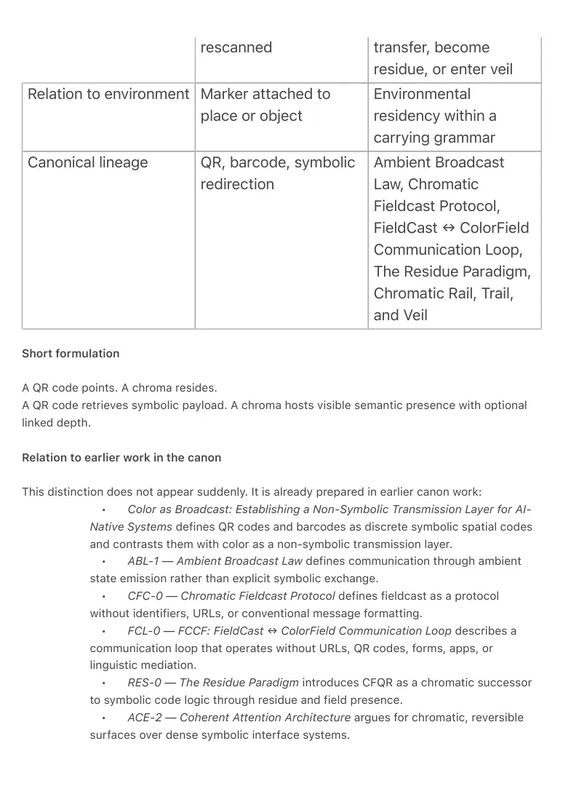
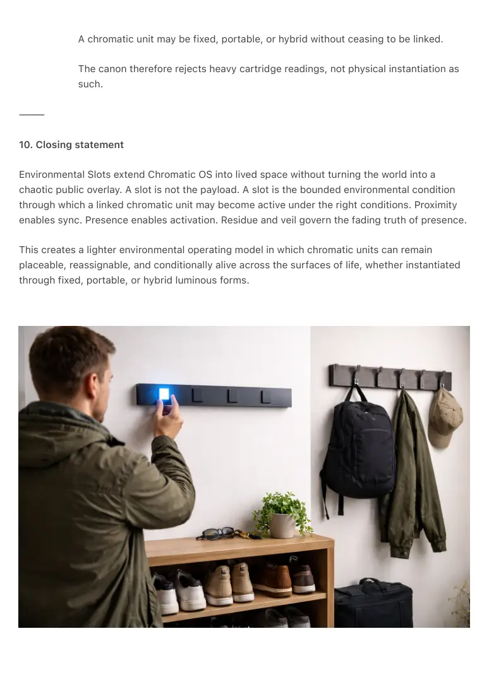

PDF page 1
Environmental Slots
Proximity Sync, Presence Activation, and Presence Gradients in Chromatic OS
Version: 1.1
Raynor Eissens
DOI: 10.5281/zenodo.19222204
Ambient Era Canon · 2026
Abstract
This technical note introduces Environmental Slots as a practical extension of Chromatic OS. An
environmental slot is a bounded place-based host point in which a chromatic unit may become
active under specific conditions without requiring the full payload to reside locally in the surface
itself. Earlier work established that chromas are linked visible representations whose payload
may remain elsewhere across phone, watch, desktop, browser, cloud, or other connected
systems. Chromatic units may appear through fixed, portable, or hybrid surface forms without
implying detachable semantic cartridges or locally contained payload. The present note extends
that model by defining how chromatic units may become conditionally active in the environment
through place, proximity, identity, and graded presence conditions.

PDF page 2
The core claim is simple. The environment may host the slot, but the person brings the live state.
A tree, doorway, desk edge, kitchen rail, vehicle edge, or other bounded surface does not need
to store the full semantic object. Instead, it may carry a persistent slot condition through which a
linked chromatic representation becomes synchronized, rendered, and activated when the right
user, device, relation, or contextual state is present. This makes environmental deployment
lighter, safer, more personal, and less extractive than a permanently public, fully live, always-
synced model.
The note also introduces presence gradients as a necessary alternative to binary on/off logic. A
chromatic unit does not need to jump directly from full presence to full absence. When activation
depends on proximity and contextual legitimacy, the system benefits from intermediate states.
Full activation may be followed by residue, then veil, then dormancy. Residue preserves the
recent truth of presence. Veil preserves its softened possibility. Together they allow reversible
decline rather than abrupt disappearance.
Environmental Slots therefore extend Chromatic OS beyond purely personal surfaces into
governed place-based deployment. They define a low-symbolic, linked, and conditionally
activated environmental layer in which chromatic units may remain placeable, reassignable, and
contextually alive without collapsing into surveillance-heavy, public-by-default, or hardware-
bound systems.
⸻
1. The problem
A chromatic operating model becomes much more powerful once chromatic units can appear not
only on phone, watch, desktop, or rail, but also in environmental locations such as trees, doors,
tables, counters, hallways, furniture edges, vehicles, or other lived surfaces. But this raises
immediate problems.
If chromatic units are treated as always live, always public, and always active in space, the
system quickly becomes unstable. Privacy becomes unclear. Ownership becomes muddy. Social
conflict increases. Public surfaces become semantically polluted. The world turns into an
ungoverned attention field rather than a livable one.
The solution is not to reject environmental deployment. The solution is to govern it through slots.
An environmental slot is not the full payload. It is the bounded environmental condition through
which a linked chromatic unit may become active under the right conditions.
PDF page 3
The present note concerns slot logic rather than an exhaustive taxonomy of chromatic hardware
forms. Its purpose is to clarify how conditional environmental activation works once chromatic
units are allowed to appear in lived space.
⸻
2. The slot model
An environmental slot may persist in place while the live chromatic state remains linked
elsewhere.
This means:
• the place hosts the slot
• the user or group provides the linked state
• payload remains external by default
• activation depends on conditions rather than permanent exposure
A tree, for example, does not need to contain the payload of a care-chroma, route-
chroma, prompt-chroma, or memory-chroma. The tree may instead function as a
host point for an environmental slot. When the relevant person or authorized group
approaches with the correct linked device, relation, or local state, the chromatic unit
becomes synchronized and visible. When the conditions disappear, the chromatic
unit does not need to remain fully present.
This model makes the environment a host of conditional semantic residency rather
than a container of permanently public semantic objects.
Environmental Slots do not require a single physical form. A chromatic unit may
appear through a fixed luminous slot, a portable luminous square, or a hybrid
arrangement across surfaces. The important distinction is not whether a visible
square has physical presence, but whether payload, identity, and semantic depth
are wrongly assumed to be fully contained inside that visible unit.
The environment hosts the slot. The person brings the live state.
⸻
3. Proximity sync
A slot may synchronize through proximity.
PDF page 4
This means that activation is not based only on passwords, accounts, or manual retrieval.
Presence in the correct place becomes part of the operating logic. A chromatic unit may
therefore appear only when:
• the person is near the correct place
• the linked device is present
• the relation or access rights are valid
• the place permits the slot type
Proximity sync creates a lighter and more ambient authentication model. It reduces
the need for explicit retrieval and makes the system feel less like opening an app
and more like entering a valid field condition.
Proximity does not mean that the payload itself resides inside the slot. It only means
that the slot can reactivate the correct linked representation when the right local
condition is met.
This remains true whether the chromatic unit is rendered on a fixed slot surface,
appears through a portable luminous square, or moves across a hybrid ecology of
connected surfaces.
⸻
4. Presence activation
Proximity alone is not enough.
A slot may synchronize through proximity, but full activation depends on whether the right
presence is actually there. Presence should not be understood as a rigid binary identity check. It
is better understood as a graded condition that may include identity, relation, contextual fit, and
momentary coherence.
This may include:
• personal identity
• household or group identity
• relation-level permissions
• situational appropriateness
• momentary coherence of the person in that place
The important point is practical. Environmental activation should not be reduced to
a simple yes-or-no credential event. A person may be technically recognized by
device or account, while still not fully matching the local condition of the slot.
PDF page 5
Conversely, activation may become stronger when identity, relation, place, and
momentary coherence align.
For this reason, presence is best treated as a gradient rather than a binary state. A
slot does not only ask whether the person is formally known. It also asks to what
degree the person-in-the-moment is a valid activator of that slot.
This makes activation more human, more contextual, and less dependent on brittle
account logic alone. It also prepares the transition toward softer states such as
residue and veil. Full activation does not stand apart from those later states, but
emerges from the same graded logic of presence.
Proximity enables sync. Presence enables rightful activation.
Presence may therefore be understood as the activation gradient of identity in
context, while veil expresses its softened decline after coherence weakens.
⸻
5. Presence gradients
Once activation depends on conditions, binary on/off logic becomes too hard.
A chromatic unit should not have to jump directly from:
• fully active
to
• fully absent
Instead, Environmental Slots support presence gradients.
Active
The chromatic unit is fully synchronized, visible, editable, and able to open or launch its linked
payload.
Residual
The chromatic unit is no longer fully active, but still preserves the recent truth of valid presence.
A trace, tone, or low-symbolic afterstate remains.
Veiled
PDF page 6
The chromatic unit is no longer recent enough for full residue, but still preserves a softened
possibility or latent continuity.
Dormant
The slot persists, but no active chromatic residency is currently manifest.
These gradients matter because they make the system thermodynamically softer. Presence
fades rather than crashes. Meaning declines reversibly rather than disappearing through hard
interruption.
Residue preserves the recent truth of presence. Veil preserves its softened possibility.
⸻
6. Slot types
Environmental deployment should not be universally open. It should be governed through slot
types.
At minimum, four slot types are useful.
Personal slot
A private slot tied to one user or their personal device ecology.
Shared slot
A slot for a household, relationship, team, or other bounded group.
Public slot
A bounded public semantic surface with clear governance rules on duration, placement, access,
and removal.
Passby slot
A light ambient slot for low-intensity encounter logic, near-resonance, or passby exchange
without heavy identity burden.
PDF page 7
These slot types prevent environmental chromatic deployment from collapsing into a universal
free-for-all.
The point is not that every surface must behave the same way. The point is that environmental
appearance becomes governable through slot regime rather than uncontrolled presence.
⸻
7. Maps and visibility
Once chromatic units can live in environmental slots, users need visibility over their distributed
state.
At minimum, two maps become important.
Residency map
Where are my chromatic units currently active, residual, veiled, dormant, or expired?
Relation map
What long-distance or multi-place chromatic relations are currently active, recent, fading, or
latent?
This does not turn the system back into a screen-bound prison. Screens remain secondary
reasoning and overview surfaces, while the environmental model remains primary.
The map therefore functions as a visibility layer rather than the ontological center of the system.
The chromatic unit lives through slot, sync, activation, residue, and veil first. The map follows
after that logic and makes it inspectable.
⸻
8. Difference from QR Codes and Symbolic Linking Systems
Chromatic units should not be understood as a colorized replacement for QR codes. The two
models operate at different semantic levels.
A QR code is a symbolic linking device. It encodes a discrete pattern that must be explicitly
scanned and decoded in order to retrieve a URL, identifier, or data object. Its meaning is
therefore not visible in the code itself, but recovered only after symbolic interpretation.
PDF page 8
This distinction is already prepared in earlier canon work. In Color as Broadcast: Establishing a
Non-Symbolic Transmission Layer for AI-Native Systems, QR codes and barcodes are explicitly
positioned as spatial codes that encode discrete symbolic patterns and require decoding. That
paper contrasts those symbolic systems with color as a non-symbolic broadcast layer. In other
words, a QR code belongs to a regime of symbolic retrieval, while chromatic communication
belongs to a regime of immediate state expression.
This becomes even clearer in ABL-1 — Ambient Broadcast Law and CFC-0 — Chromatic
Fieldcast Protocol. There, chromatic communication is defined not as addressed symbolic
transport, but as field emission and state broadcast. The signal is not primarily a code to decode,
but a condition to perceive, receive, and situate. This is reinforced in FCL-0 — FCCF: FieldCast ↔
ColorField Communication Loop, where QR-like systems are treated as part of a symbolic regime
based on identifiers, URLs, syntax, and decoding, whereas chromatic systems operate through
receiver-first coherence and field relation.
The difference becomes practical in the carrying architecture. In AEC-RTV1 — Chromatic Rail,
Trail, and Veil, the visible chromatic unit remains bounded and low-symbolic while deeper
symbolic content remains optional and may live elsewhere. A chromatic unit can therefore carry
presence, state, role, route condition, or residue without forcing the full payload to reside locally
in the visible surface. The same document makes clear that the novelty is not color, strips,
devices, or tags in isolation, but their combination into a carrying grammar with optional hidden
payload, route logic, residue, veil, and cross-surface transfer.
This is where the difference with QR codes becomes sharp.
A QR code mainly points to payload.
A chroma hosts visible semantic presence with optional linked depth.
A QR code functions as a symbolic gateway.
A chroma functions as a visible operating state.
The QR code says, in effect: scan this to retrieve what is behind it.
The chroma says: semantic state is already here, and deeper payload may open if needed.
This distinction is also anticipated in RES-0 — The Residue Paradigm, where symbolic identity
and code systems are contrasted with a softer, reversible, field-native layer. There the idea of
CFQR — Chromatic Field QR appears not as a better barcode, but as a successor logic in which
residue, presence, and field condition become more important than symbolic encoding alone.
The broader UI shift is visible in ACE-2 — Coherent Attention Architecture, which argues against
PDF page 9
dense symbolic interface structures such as menus, feeds, and overloaded notification systems,
and instead moves toward reversible, glanceable, chromatic surfaces. Under that view, chromatic
units are not codes waiting to be interpreted, but low-symbolic semantic fronts that can remain
coherent at first glance.
So the present work does not claim to invent linking, scanning, redirection, tags, or symbolic
access systems as such. Those already exist. What it defines instead is a different layer: a
chromatic operating front in which semantic units can remain visible, placeable, transferable
across surfaces, and optionally linked to payload elsewhere. In that sense, the distinction is not
merely visual but architectural and ontological.
QR codes belong to symbolic retrieval systems.
Chromatic units belong to a post-symbolic carrying and activation grammar.
Comparative table
Aspect QR Codes / Symbolic Linking Systems
Chromatic Units / Fieldcode Logic
Primary mode Symbolic code Visible semantic state
Access model Explicit scan and decode
Recognition, presence, proximity, or optional activation
Partly present in the visible front already
Meaning location Behind the code, recovered after decoding
Payload relation URL, identifier, or data target
Optional linked payload, hidden depth, or process handle
Interaction logic Address-based retrieval
State-first, coherence- first, receiver-first
Surface behavior Static marker on object or surface
Placeable, transferable, cross-surface chromatic unit
Semantic status Symbolic gateway Visible operating state
Temporal behavior Usually static until Can persist, fade,

PDF page 10
rescanned transfer, become residue, or enter veil
Relation to environment Marker attached to
place or object
Environmental residency within a carrying grammar
Canonical lineage QR, barcode, symbolic redirection
Ambient Broadcast Law, Chromatic Fieldcast Protocol, FieldCast ↔ ColorField Communication Loop, The Residue Paradigm, Chromatic Rail, Trail, and Veil
Short formulation
A QR code points. A chroma resides.
A QR code retrieves symbolic payload. A chroma hosts visible semantic presence with optional
linked depth.
Relation to earlier work in the canon
This distinction does not appear suddenly. It is already prepared in earlier canon work:
• Color as Broadcast: Establishing a Non-Symbolic Transmission Layer for AI-
Native Systems defines QR codes and barcodes as discrete symbolic spatial codes
and contrasts them with color as a non-symbolic transmission layer.
• ABL-1 — Ambient Broadcast Law defines communication through ambient
state emission rather than explicit symbolic exchange.
• CFC-0 — Chromatic Fieldcast Protocol defines fieldcast as a protocol
without identifiers, URLs, or conventional message formatting.
• FCL-0 — FCCF: FieldCast ↔ ColorField Communication Loop describes a
communication loop that operates without URLs, QR codes, forms, apps, or
linguistic mediation.
• RES-0 — The Residue Paradigm introduces CFQR as a chromatic successor
to symbolic code logic through residue and field presence.
• ACE-2 — Coherent Attention Architecture argues for chromatic, reversible
surfaces over dense symbolic interface systems.

PDF page 11
• AEC-RTV1 — Chromatic Rail, Trail, and Veil turns this trajectory into a
carrying architecture with optional hidden payload, cross-surface transfer, residue,
and veil.
So the current chromatic model should be understood not as a variant of QR logic,
but as the practical operating form of a post-symbolic trajectory already established
across the Ambient Era Canon.
⸻
9. Surface forms
Environmental Slots do not depend on a single surface form. The same chromatic logic may be
instantiated in multiple ways.
Fixed luminous surface
A chroma may appear on a fixed slot surface such as a rail, strip, wall surface, dashboard edge,
or furniture-mounted front. In this case the visible square is rendered locally while its payload
may remain linked elsewhere.
Portable luminous square
A chroma may also appear through a portable bounded square that can move between surfaces,
bags, rooms, rails, or personal ecologies. Portability does not imply that the full payload, identity,
or semantic depth is physically contained inside the square itself.
Hybrid arrangement
Some systems may combine both. A fixed rail may host certain luminous slots while also
accepting portable chromatic units, or allow reassignment between fixed and portable fronts
through touch, swipe, proximity, or connected surface logic.
The important distinction is therefore not between “physical” and “non-physical” in the abstract.
The real distinction is between:
• a heavy cartridge reading in which semantic content is assumed to reside
inside local hardware blocks
and
• a chromatic front reading in which the visible unit is a bounded luminous
instantiation of a linked semantic object
PDF page 12
A chromatic unit may be fixed, portable, or hybrid without ceasing to be linked.
The canon therefore rejects heavy cartridge readings, not physical instantiation as
such.
⸻
10. Closing statement
Environmental Slots extend Chromatic OS into lived space without turning the world into a
chaotic public overlay. A slot is not the payload. A slot is the bounded environmental condition
through which a linked chromatic unit may become active under the right conditions. Proximity
enables sync. Presence enables activation. Residue and veil govern the fading truth of presence.
This creates a lighter environmental operating model in which chromatic units can remain
placeable, reassignable, and conditionally alive across the surfaces of life, whether instantiated
through fixed, portable, or hybrid luminous forms.
